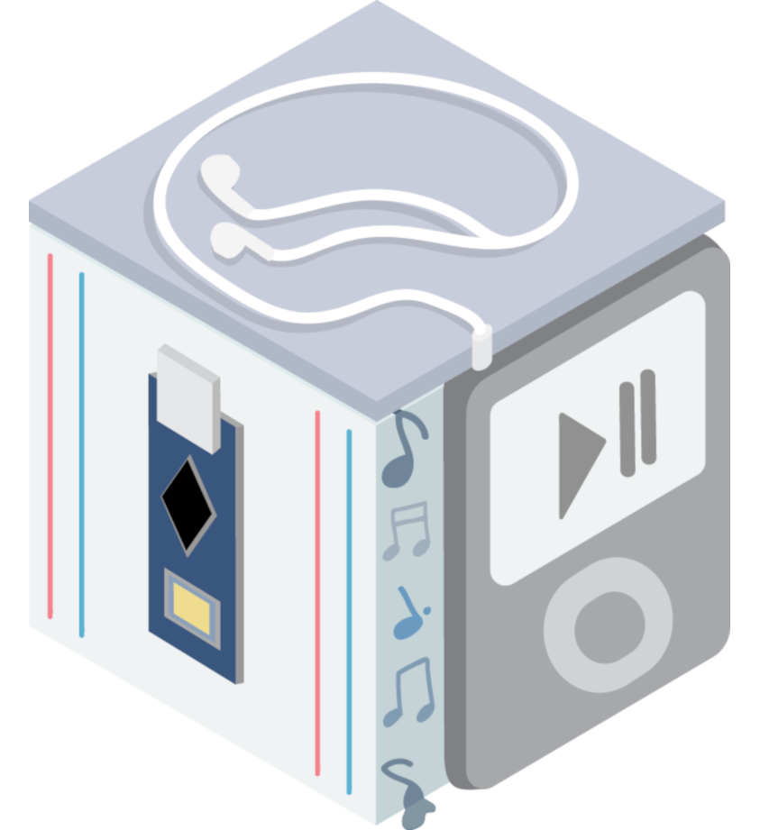

 IPODUINO | Personal Project
Ipoduino Functionality
The Ipoduino is a Ipod Arduino Music Player that allows a user to upload multiple songs onto an Arduino Nano, select between multiple songs via potentiometer, and view information about the currently playing song via LCD display. [The image to the right is from IEEE @ UCLA]
Skills Learned
In this project I was introduced to working with microcontrollers, specifically the Arduino Nano and the Arduino IDE to program the chip. I also gained experience in designing and prototyping embedded systems through designing the speaker, LCD, and potentiometer circuits. The system went through many rounds of debugging to obtain full functionality, which increased my comfortability with programming in C++ prototyping with breadboards.
The Process
I broke up this project into approachable steps as this was my first experience with the Arduino Ecosystem. This approach allowed me to design and test incrementally and easily detect sources of error.
- Check Power Supply methods with LED Circuit
- Apply potentiometer inputs with AnalogRead/DigitalRead for conditional control using if statements and AnalogWrite/DigitalWrite for output manipulation
- Create and test Speaker circuit
- Create and test LCD Circuit
- Integrate LCD circuit with Speaker circuit, allow for song selection capability via potentiometer, and enable accurate LCD display data that describes the state of the system
Finished Product
 >>>>>>> master
>>>>>>> master
The finished Ipoduino was able to play The Star Wars song, Cantina Band and Despacito depending on the state of the potentiometer. And the LCD display accurately displayed the song presently playing and the amount of time the program has been running.